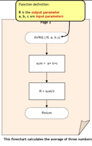

return_type function_name( parameter list ) {
body of the function
}
•A function definition consists of a function header and a function body. Here are all the parts of a function:
•A function may return a value. The return_type is the data type of the value the function returns. Some functions perform the desired operations without returning a value. In this case, the return_type is the keyword void.
•This is the actual name of the function. The function name and the parameter list together constitute the function signature.
•A parameter is like a placeholder. When a function is invoked, you pass a value to the parameter. This value is referred to as actual parameter or argument. The parameter list refers to the type, order, and number of the parameters of a function. Parameters are optional; that is, a function may contain no parameters.
•The function body contains a collection of statements that define what the function does.
•While creating a function, you give a definition of what the function has to do. To use a function, you will have to call or invoke that function.
•When a program calls a function, program control is transferred to the called function. A called function performs defined task and when its return statement is executed or when its function-ending closing brace is reached, it returns program control back to the main program.
•To call a function, you simply need to pass the required parameters along with function name, and if function returns a value, then you can store returned value
